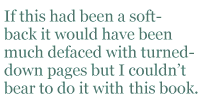

This book caught me off-guard and quickly became one of my favourite collections of the year. I expected a volume called Dissonances would be ultra-clever, perhaps well-crafted but ultimately cold. It is both clever and well-crafted but far from cold. This book is alive with love poems, especially to the poet’s children and his father, but also to the world itself: “lightning strikes a tree/with all the love one jagged thing/can muster for another.”
“Love will find its own balance”seems to be at the heart of this work. He succeeds in describing the things which are so hard to shape, and does so with perfect clarity:
the great bell of the world vibrates and I am drunk
with winter-shine. The concrete blazes. The red tang
of seven o’clock and the vein-belt of walking brazen
to the frost leaps through me. An hour before petrol-stink
and the shrink of people diminishing into a rush, here
in the open-throated song of morning, I am in the clear.
These poems have a real music built into their bones, and are fleshed with sharp imagery, the sort that makes you say, “Yes, that’s how it is”:
“My chest is cold as the bow of a boat”, “a face like a bolted door”: they form a tangible, sensory connection between the poet and the world — a physicality which he appears to transmit effortlessly to the reader.
McLoughlin is a poet in love with language. I enjoyed the breadth of his vocabulary (had to look up etiolated, phreatic, xebec) and the way he uses Irish words to spice up the English.He is a word-scavenger, gathering whatever will sound right: “there in/ semi-darkness we’ll cugger and eat in secret”, “The first knuckles swell and harden, but do not thole long”, “a small pawnger-full of wine.”
Although the book is divided into four sections, there are three distinctively different types of poems here: his own, often personal, usually free-verse lyrics of the first two sections; the experimental “exploded forms” of the Shrapnel section, which have the effect of making the reader pause and savour each word or phrase, and acknowledge that every one is there because it has to be; and thirdly the masterly translations of the Second Sight section. This begins and ends with translations of Rilke verses, which sandwich eight wonderful Irish poems, and the inclusion of these make it clear where his poetic roots lie. The depth of feeling, and rightness of imagery, and musicality of the translations from Cathal O Searcaigh, Sean O Tuama, Mairtin O Direain, and Sean O Riordain is at the heart of his own poems too. McLoughlin fits here as part of a rich tradition and culture. The musical qualities of his own poems are based on old Gaelic metrical devices and on a Gaelic sound system related to assonance, consonance, dissonance, and continued through work in modern Irish and the Hiberno-English dialect.
So, back to the book’s title, which I had read in its colloquial rather than literary meaning (OED: “discordant, harsh-toned, incongruous”) and found so at odds with the contents. The poet explains that the title relates to a number of different dissonances: “first the use of dissonant rhymes (where closely related consonants and vowels are played off each other to give the musical effect of a slightly bum note) — e.g. d, t, th, dth sounds being used for consonantal dissonances. The other dissonances are the relation of the binding effect of the musical quality of the verse and its tension with the ‘formal looseness’ or with ‘exploded form’ — many of the poems in that section began life as sonnets (perhaps they still are a form of ‘exploded sonnet’). Then there are certain dissonances between the subject matter of the poems and the imagery used to explore the subject.” So there we have it!
I usually have a nasty habit of turning down the pages of poetry books so I can find the poems I like more easily. If this had been a soft-back it would have been much defaced with turned-down pages but I couldn’t bear to do it with this book. Congratulations to Bluechrome for publishing hardback collections. This is what slim volumes of poems should feel like. And these are the kind of poems they should contain. I was grateful to find nothing harsh-toned or discordant in this collection. Rather I found harmony, light, clarity, craftsmanship, intelligence and love:
Maggie Butt is an ex-journalist and BBC TV documentary film maker turned poet. Her poems have been widely published in magazines and escaped the page onto Radio 4, readings, e-zines, festivals and schools. She is the judge of Ver Poets competition 2008. Her day job is Head of the Media department at Middlesex University where she has been teaching Creative Writing since 1990. Her poetry pamphlet Quintana Roo was published by Acumen in 2003 and her collection Lipstick was published in March 2007 by Greenwich Exchange. It was chosen as the Poetrykit book of the month December 2007/ January 2008.